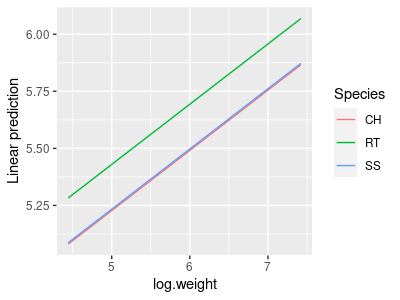

So far we have seen how to use GLM to model effects of categorical predictors (ANOVA) and numeric predictors (regression). We have also seen that it's easy to extend the GLM to model more than one numeric predictor (multiple regression). Since it's possible to model either categorical or numeric variables with a GLM, and to use more than one predictor at a time, it stands to reason that we should be able to use two predictors in the same model, one of which is categorical and the other of which is numeric. A model like this with a mix of categorical and numeric predictors is called Analysis of Covariance, or ANCOVA.
We usually mix categorical and linear predictors for one of three reasons:
-
The regression is the scientifically important thing, but there is a grouping in the data that needs to be accounted for. We may need to account for a categorical nuisance variable (greenhouse, growth chamber), or a characteristic of our study organisms (species, sex, age class).
-
Comparison among categorical treatment group levels is the scientifically important thing, but there is a continuous variable that adds noise to the data that needs to be statistically eliminated. Examples like this often use a measure of initial conditions as a covariate (e.g. initial bacterial density, initial weights of mice, etc.) to compensate for inability to hold all variables constant.
-
Comparison among treatment group levels is the important thing, but we need to use a covariate to adjust the size of the difference between the means to obtain a more reasonable comparison. A classic example of this type of analysis is mass-adjusting some feature of interest - using mass as a covariate compensates for our inability to set every individual to the same mass experimentally.
The model that we would use is the same in all three cases - we would have a numeric response explained by two predictors, one that is numeric and another that is categorical. The only difference would be in the part of the results on which we focus our attention.

Our focus today will be on comparison of wing spans and tail lengths of three species of birds of prey, red-tailed hawks (RT), Cooper's hawks (CH), and sharp-shinned hawks (SS), shown in the image to the right. A summary table of the weights (g), wing chord (which measures the length of the longest primary feather to the wrist, and is a standard measure of wing size, in mm), and tail lengths (mm) of these species shows us the following:
Species Weight Wing Tail
1 CH 415.6 243.7 202.6
2 RT 1098.8 386.3 222.8
3 SS 140.1 183.4 145.5
RT are by far the biggest bird in the picture, and not surprisingly RT have the largest means on all three of these variables - big birds have big parts. However, you can see in the picture that RT are shaped very differently than the other two species. RT are in the group of hawks called the buteos, which hunt ground-based prey, usually either from a perch or while soaring (soaring is a style of flight in which the wings are held outstretched without flapping, and the birds stay aloft by riding updrafts). In contrast, both CH and SS are accipiters, which hunt by chasing down smaller birds, usually through dense vegetation. RT need to have wings and tails that are well suited to soaring, whereas the CH and SS need to be highly maneuverable. It appears that CH and SS have longer tails for their body sizes than RT. The wings of the accipiters seem to smaller than RT for their sizes, but the amount of difference is difficult to judge given the differences in overall size of the species - or, to put it in statistical terms, comparison of shapes of the birds is confounded with differences in size.
So, how do we make a comparison of the shapes of the species with respect to their wing and tail dimensions that accounts for the differences in their overall sizes?
The first thing we should do is define weight as a simple measure of size. As you learned in the experimental design activity, the ideal way to eliminate the confounding effects of a variable is to hold it constant experimentally, but here our measure of size is weight, and even if we could find some RT, CH, and SS that were all the same weight they would probably not be normal animals (the RT would be emaciated, and the CH and SS would be obese). When we can't set all of the subjects to the same value for a confounding variable the next best thing is to include the confounding variable in the model as a predictor, to account for its effects - this has the statistical effect of setting all of the species to the same mean weight, so that the differences in wing span and tail length can be compared between the species as though they all had the same weight. In other words, we will correct for the differences in size, so that we can focus on which species have the longest wing spans or tail lengths for their size.

Possible outcomes
One possibility is that, despite the impression the picture above gives us, the hawks differ only in size but are the same shape. If this is the case then all three of the hawk species are essentially the same model that is scaled to different sizes. If that were the case, then the wing chords would look like the figure to the right, which shows the red-tailed hawk silhouette magnified to different sizes.

If raptors were all just different magnifications of the same basic model, a regression of wing vs. body would look like the illustration to the right. A single line with a single intercept is fitted through all three of the species, and it fits well. If we adjusted for body mass by calculating the wing chords of each species at the same mass, this would be like sliding the RT and SS points along the line such that their mean body masses are the same as the CH in the middle, and all three would all have the same mass-adjusted wing chords.
So, what would a GLM that included body size and species as predictors show if this is the outcome? Body size is explaining the wing chord well, and we don't need lines with different intercepts to explain the scaling relationship. Adding species as a categorical predictor only helps if we need different intercepts, so including species as a predictor would not be expected to improve the fit - species would not be a significant predictor as long as body size was also included.

But, if raptors aren't just different magnifications of the same basic model, we might expect a similar amount of increase in wing chord with increasing body size, but each species might have a different baseline size depending on whether they are adapted for soaring or maneuverability. If this is true a set of parallel lines would describe the data well, like the graph to the right.
A linear model that includes both species and body size would fit better here than one that only included body mass. We would expect both species and body mass to be significant if we included them both in the GLM. The vertical distance between the lines at any given body mass is the mass-adjusted difference in wing span.
So, for today, we will analyze the differences between these three species of raptor in their mass-adjusted wing chords, and in their mass-adjusted tail lengths. If we find that the species categorical variable is significant, then we'll conclude that the species are not just different scales of the same model - that is, they have different shapes, and not just different sizes. Once we have established that there is a difference between the species, we can also use our model to estimate wing chords and body lengths of all the species at a common size.
Analyze size-corrected differences in wing chord and body length.
1. The data set you will analyze is here. Download the Rmd file into the project folder as well. Make a new project in R Studio called "ancova", and then download and import the data into a data frame called "hawks".
If you open the hawks dataset and look it over, you'll see that there are columns for Species, Weight, Wing, and Tail, as well as some columns indicating the date that the bird was captured and measured, and its age and sex. We won't be using age or sex in this analysis, so the only categorical variable we will have is Species. We should convert Species to a factor (in your Rmd file, just below your import command):
hawks$Species <- factor(hawks$Species)
2. Now we are going to look at the data. First you need to load the ggplot2 library (in your Rmd file):
library(ggplot2)
The first part of a ggplot() command establishes the "aesthetic mappings" for variables (that is, the roles they're assigned to) (in your Rmd file):
ggplot(hawks, aes(x = Weight, y = Wing, color = Species, group = Species))
We will be plotting data from the hawks data frame, with Weight on the x-axis, Wing on the y-axis, and Species used for grouping and color coding.
To get a scatter plot with points colored by species we have to add geom_point() to the end of the command:
ggplot(hawks, aes(x = Weight, y = Wing, color = Species, group = Species)) + geom_point()
You may at this point notice that the points for each species don't all seem to be lying along the same line. An ANCOVA fits a set of parallel lines to the data, which means that a single slope will be used but with different intercepts. These data seem to have both different slopes and intercepts. We can check our impression by adding the regression lines for each species' data using geom_smooth() - add this after geom_point():
ggplot(hawks, aes(x = Weight, y = Wing, color = Species, group = Species)) + geom_point(size = 0.5) + geom_smooth(method = "lm", se = F)
This adds a straight line to each species' data - by making the points smaller you can see the lines better, and you'll see that they don't all seem to have the same slope. This is not surprising, because scaling of body parts is often allometric, meaning that the parts change at different rates. Weight is a volumetric property - the bigger the volume of the animal the heavier it will be - and for any change in a linear dimension the volume increases roughly to that amount cubed.
We can potentially straighten out those lines by plotting axes on a log scale - the log of a number is the exponent needed to raise a base to equal the number. If we use log base 10, then the logs are the exponent needed to raise 10 to equal the number (the log base 10 of 10 is 1, of 100 is 2, of 1000 is 3, and so on). We can set an axis to use a log scale in ggplot with by adding scale_x_log10() or scale_y_log10() to our command. Let's set the x-axis to a log scale first to see if that's enough:
ggplot(hawks, aes(x = Weight, y = Wing, color = Species, group = Species)) + geom_point(size = 0.5) + geom_smooth(method = "lm", se = F) + scale_x_log10()
You'll see that CH and SS seem to have the same slope, but RT still do not, so let's set the y-axis to a log scale as well:
ggplot(hawks, aes(x = Weight, y = Wing, color = Species, group = Species)) + geom_point(size = 0.5) + geom_smooth(method = "lm", se = F) + scale_x_log10() + scale_y_log10()
This time the three lines seem to be more or less sharing the same slope, but to each have different intercepts - when we run our ANCOVA we will want to use the log of wing chord and the log of weight so that our ANCOVA model fits the data well.
We can specify a log scale on graph axes easily enough, but if we are going to use the log of wing chord and the log of weight as our variables it's convenient to make log-transformed versions of them. The statistical results will be the same whether we use the log base 10 or natural logs (which are logs for the base e, which is an irrational constant equal to 2.178 for the first three decimal places). In R the log() function is for natural logs, and log10() is for log base 10. We'll go ahead and use natural logs - in your Rmd file enter:
hawks$log.wing <- log(hawks$Wing)
hawks$log.weight <- log(hawks$Weight)
Your hawks dataset should now have 11 variables, the last two of which
are log.wing and log.weight
3. Fit a linear model with log wing chord as the response variable, using log of mass and species as predictors (in that order). Call the model "wing.lm" (for "wing chord linear model") - in your Rmd file enter:
lm(log.wing ~ log.weight + Species, data = hawks) -> wing.lm
To see what is in this lm object, type its name below this line and run the code chunk - you should see:
Call:
lm(formula = log.wing ~ log.weight + Species, data = hawks)
Coefficients:
(Intercept) log.weight
SpeciesRT SpeciesSS
3.907536
0.263949 0.202391
0.006265
All that is displayed here is the call (which reproduces the command used), and the coefficients for each term. The intercept is the predicted log.wing for Cooper's hawks with log.weight of 0 - how did we know this? By definition, and intercept is the value of the response when all of the predictors are set to 0 - when SpeciesRT and SpeciesSS are both set to zero the bird is a CH, so the intercept is the expected log.wing for a CH with log.weight of 0.
4. To get our ANOVA table for the model, use (in your Rmd file):
anova(wing.lm)
You'll see that log.weight is a significant predictor, as is Species. This is a case in which we are trying to adjust for the effect of weight as a confounded, nuisance variable - the fact that log.weight is statistically significant gives us reason to think it was a good idea to account for it, but we don't really have much to interpret (yes, bigger birds have bigger wings, but we know that).
The effect of Species is of more interest - there are significant differences between at least two of the species, but we can't tell which from the ANOVA table. We can do Tukey comparisons to see which are different from which, and we would like to get predicted log wing chords for the species at the same log weight, so that we can compare them. This will be mass-adjusted, least squares means.
Let's do our Tukey comparisons and get a table of least squares means next.
5. We can get Tukey post-hocs for the differences between mass-adjusted means for species using the emmeans library (in your Rmd file):
library(emmeans)
emmeans(wing.lm, tukey ~ Species)
There are two parts to the output - first there is an $emmeans block that looks like this:
Show in New Window
$emmeans
Species emmean SE df
lower.CL upper.CL
CH 5.575 0.006082
858 5.563 5.587
RT 5.778 0.005104
858 5.768 5.788
SS 5.582 0.010419
858 5.561 5.602
Confidence level used: 0.95
These are the expected marginal means (a.k.a. the least squares means) for wing span, calculated at the mean log weight. Calculating the least squares means at the mean of the covariate is a good choice, because it is where the standard errors will typically be smallest. You can see that RT still have the largest wing span (5.778) after adjusting for mass.
Whether the differences between the species should be interpreted depends on whether the Tukey comparisons are significant - those comparisons are in the next block, and look like this:
$contrasts
contrast estimate SE df
t.ratio p.value
CH - RT -0.20239 0.00917 858 -22.072 <.0001
CH - SS -0.00626 0.01006 858 -0.623 0.8077
RT - SS 0.19613 0.01519 858 12.911
<.0001
P value adjustment: tukey method for comparing a family of 3 estimates
The comparisons reported are between the mean log of wing chord for each species, adjusted for mass. Based on these results you'll see that the buteo (RT) is different from the two accipiters (CH and SS), but the two accipiters are not different from one another. This isn't too surprising, since the two accipiters look to be very similar in shape, but differ in size, such that once the size difference has been accounted for there isn't really any difference left between the accipiters.
6. The choice to get least squares means at the mean of weight is a good one, but is it really the best one? We can compare the amount of difference between the We want predicted wing chords for each Species, so the first thing we need is a variable called Species with one row for each species - we can get this with (in the wing.lsmeans chunk of your Rmd file):
data.frame(Species = levels(hawks$Species), weight = 0) -> for.predict
This first command makes a new data frame with one row for each Species, and with 0 as the log.weight for all of them. The new data frame is assigned to a new object called for.predict.
To get predicted log.wing for these three species at a log.weight of 0, use (in the same wing.lsmeans chunk of your Rmd file):
data.frame(predict(wing.lm, for.predict, se = T))
You will see:
fit se.fit df residual.scale
1 3.907536 0.04301618 858 0.04242877
2 4.109927 0.04965137 858 0.04242877
3 3.913801 0.03487755 858 0.04242877
These are not the same numbers you got with emmeans(), but the amount of difference between them is the same - the difference between CH and RT is 0.2, and between SS and RT is 0.2, but between SS and CH is less than 0.01. The standard errors are, however, a little bigger, because we're predicting the least squares mean at a value of log.weight that has a wider standard error (remember, confidence bands around regression lines are narrowest at the mean of x and mean of y, and get bigger as you move to larger or smaller values of x).
To confirm that the emmeans() estimates are done at the mean of log.weight, change the values in the log.weight column of for.predict to be equal to the mean of log.weight from the hawks data (in your Rmd file, same code chunk):
for.predict$log.weight <- mean(hawks$log.weight)
data.frame(predict(wing.lm, for.predict, se = T))
You'll see that the fit column matches the emmean column, se.fit is the same as SE, and the df are the same.
Finally, to see what the differences would be for Kaiju sized hawks by setting log.weight to 1000 (in the Rmd file, same chunk):
for.predict$log.weight <- 1000
and repeating the prediction (same chunk of your Rmd file):
data.frame(predict(wing.lm, for.predict. se = T))
and you will get:
fit
se.fit df residual.scale
1 267.8561 7.054525 858 0.04242877
2 268.0585 7.047545 858 0.04242877
3 267.8624 7.062390 858 0.04242877
The amount of difference between the least-squares means is still 0.2 between the accipiters and RT, and around 0.01 between SS and CH. What is different, in addition to the massive predicted wing chords, is that the standard errors are much larger. Regression estimates are most precise close to the mean of the x-data and the mean of the y-data, because they are not affected by error in the estimate of the slope there.
6. To plot the model, we can use the emmeans library's emmip() command - this is short for "expected marginal mean interaction plot" - in the console type:
emmip(wing.lm, Species ~ log.weight, cov.reduce = range)
Your graph will look like this:
